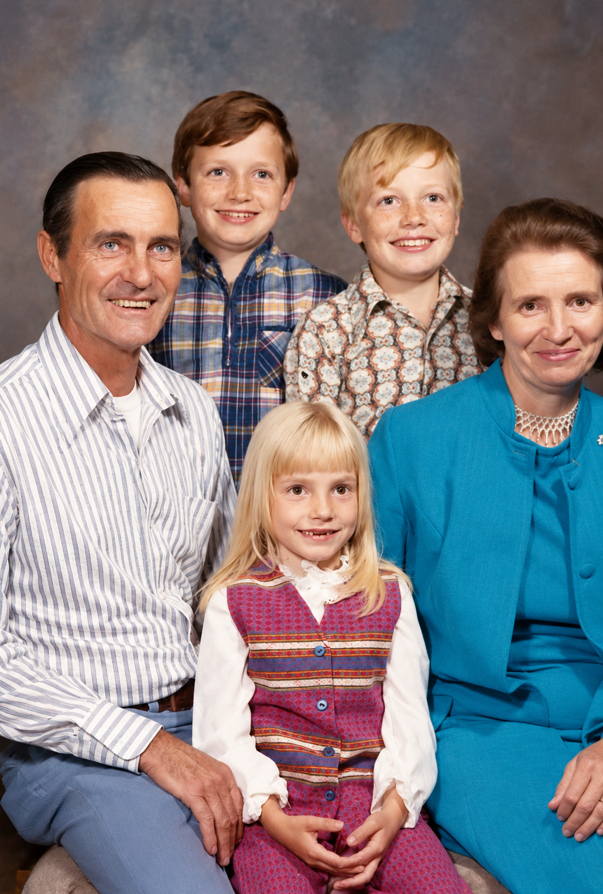
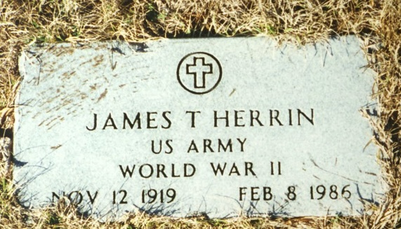

James Talmadge Herrin Sr.
1919–1986
Life Events
Born: November 12, 1919 — Pearson, Atkinson, Georgia, United States
Died: February 8, 1986 — Lake City, Columbia, Florida, United States
Family
Father: William Levi "W.L." Herrin Sr.
Mother: Laura Etta Palmer
Siblings
- Deloris Herrin
- Dorothy Herrin
- Evelyn Herrin
- Gladys Lucille Herrin
- Ida Mae "Shorty" Herrin
- Mary Lou Herrin
- Ollie Mae Herrin
- Shelby Jean Herrin
- William Levi "Billy" Herrin Jr.
Spouses:
Military Service
Branch: United States Army
Conflict: World War II
Rank: Private
Enlisted: June 5, 1941
Enlistment Place: Camp Blanding, Florida
Biography
James Talmadge Herrin was born November 12, 1919, in Georgia. His obituary identifies Homerville, Georgia, as his birthplace. He was a son of William Levi Herrin and Laura Etta Palmer.
During World War II, James served in the United States Army. His military gravestone identifies him as a World War II veteran, although his unit, rank, and dates of service have not yet been established.
James married Myrtis Hurst on October 13, 1945, in Echols County, Georgia.
James Talmadge Herrin was married to Myrtis Irene Hurst. Their marriage ended in divorce in December 1968 in Pinellas County, Florida, according to the Florida Divorce Index (certificate 31069, volume 1333). He later married Robbie Rosetta Grambling on May 12, 1972, in Taylor County, Florida (marriage certificate 029248, volume 3205).
James lived in Perry, Taylor County, Florida, for most of his life. He worked in the dairy business and later for Dan Stewart Gulf Stream Crab Company.
James died February 8, 1986, at the Veterans Administration Medical Center in Lake City, Florida, at age 66.
His obituary identifies four daughters, Diane Dodge, Pat La Blanc, Janet Dekyne, and Tonya Herrin, and two sons, William Herrin and James Herrin Jr.
James was buried at Woodlawn Cemetery in Perry, Taylor County, Florida.
Photos

Grave & Burial

Woodlawn Cemetery, Perry, Taylor County, Florida
Sources
-
1920 United States Census — William Levi Herrin Household
Type: Census1920 United States Census recording William L. Herren and his family in Clinch County, Georgia. William was recorded as a farmer working a general farm. The census records his daughter Ollie under her original name, Ollie Clayton.
Location: District 1061, Clinch, Georgia, United States
Household: William L. Herren Household
Household Members:
- William L. Herren, head, age 27
- Laura E. Herren, wife, age 22
- Ollie Clayton Herren, daughter, age 2 3/12
- James T. Herren, son, age 2/12
Supports: William Levi Herrin and Laura Etta Palmer residing in Clinch County, Georgia in 1920, William Levi Herrin working as a farmer, Ollie Clayton Herrin residing with her parents, James Talmage Herrin residing with his parents, Ollie Herrin recorded under her original name, Ollie Clayton
-
1930 United States Census — William Levi Herrin Household
Type: Census1930 United States Census recording the household of William L. Herrin in Pearson, Atkinson County, Georgia. William was recorded as a farmer on a general farm, and the family owned its home.
Location: Pearson, Atkinson, Georgia, United States
Household: William L. Herrin Household
Household Members:
- William L. Herrin, head, age 38
- Laura Herrin, wife, age 32
- Ollie Herrin, daughter, age 12
- James Herrin, son, age 10
- Ida Mae Herrin, daughter, age 8
- Gladys Herrin, daughter, age 5
- Mary L. Herrin, daughter, age 3
- Dorothy Herrin, daughter, age 2
Supports: William Levi Herrin and Laura Etta Palmer residing in Pearson, Georgia in 1930, William Levi Herrin working as a farmer, The Herrin family owning its home, Ollie, James, Ida Mae, Gladys, Mary Lou, and Dorothy residing with their parents
-
1940 Selective Service Registration Card of James Talmage Herrin
Type: Draft Registration CardSelective Service registration card for James Talmadge Herrin. The card records his residence as Mayo, Lafayette County, Florida, his birth on November 12, 1919, in Pearson, Georgia, and his citizenship as United States. James identified his father, W. L. Herrin of Mayo, as the person who would always know his address.
Location: Mayo, Lafayette County, Florida, United States
Supports: James Talmage Herrin's birth date of November 12, 1919, James Talmage Herrin's birthplace as Pearson, Georgia, James Talmage Herrin's residence in Mayo, Lafayette County, Florida, William Levi Herrin as James Talmage Herrin's father
-
1940 United States Census — William Levi Herrin Household
Type: Census1940 United States Census recording William and Laura Etta Herrin and their family in Lafayette County, Florida. The family surname was recorded as Harring. The census reports their earlier residence in Georgia near the Pearson and Atkinson County area.
Location: Lafayette, Florida, United States
Household: William L. Harring Household
Household Members:
- William L. Harring, head, age 47
- Laura E. Harring, wife, age 40
- Ollie Mae Harring, daughter, age 22
- James Harring, son, age 20
- Ida Mae Harring, daughter, age 18
- Gladys Harring, daughter, age 15
- Mary Lou Harring, daughter, age 13
- Dorothy Harring, daughter, age 10
- Billie Harring, son, age 8
- Evelyn Harring, daughter, age 5
- Shelby Dean Harring, daughter, age 1
Supports: William Levi Herrin and Laura Etta Palmer residing in Lafayette County, Florida in 1940, The Herrin family's move from Georgia to Florida, Nine children residing with William and Laura Etta, Ollie recorded as Ollie Mae by 1940, William Levi Herrin Jr. recorded as Billie, Shelby Jean Herrin recorded as Shelby Dean
-
1945 Florida State Census — William Levi Herrin Family
Type: CensusThe 1945 Florida State Population Census records the household of William Levi Herrin (listed as W. L. Herrin) and his wife Laura Etta Herrin, living on Route 2 near Mayo in Precinct 3, Lafayette County, Florida. Their household includes seven children: James, Gladys, Mary Lou, Dorothy, Billy, Evelyn, and Deloris. Evelyn was recorded as age 10 and attending school. The youngest child is identified through family research as Deloris Herrin, although her name appears to have been recorded differently, possibly as 'Dean,' in the original census. Immediately preceding the Herrin household is the household of Louie Singletary, brother of Dewey Singletary. Louie's household includes his wife Lessie and their young son Randall. The consecutive entries document the presence of both branches of the family in the Mayo area in 1945.
Location: Precinct 3, Mayo, Lafayette County, Florida, United States
Household: William Levi Herrin Household
Household Members:
- W. L. Herrin, age 52, laborer
- Laura Herrin, age 46, housewife
- James Herrin, age 24, Army
- Gladys Herrin, age 20, laborer
- Mary Lou Herrin, age 17, student
- Dorothy Herrin, age 14, student
- Billy Herrin, age 12, student
- Evelyn Herrin, age 10, student
- Deloris Herrin, age 6 (name appears as 'Dean' or similar in the original census)
Supports: Residence of William Levi Herrin and Laura Etta Palmer in Lafayette County, Florida, in 1945, Identification of James, Gladys, Mary Lou, Dorothy, Billy, Evelyn, and Deloris as members of the William Levi Herrin household, Approximate birth years of the Herrin children, Evelyn Herrin's residence in her parents' household at age 10, School attendance of several Herrin children in 1945, James Herrin's reported Army service in 1945, Residence of Louie Singletary and his family in Lafayette County, Florida, in 1945, Consecutive enumeration of the Singletary and Herrin households
-
1945 Marriage License — James Herrin and Myrtis Hurst
Type: Marriage RecordMarriage license and certificate documenting the marriage of James Herrin and Myrtis Hurst on October 13, 1945, in Echols County, Georgia. The marriage was performed by W. H. Clayton, County Judge, and recorded October 15, 1945.
Location: Echols County, Georgia
Supports: James Herrin married Myrtis Hurst, The marriage took place October 13, 1945, The marriage occurred in Echols County, Georgia
-
1950 United States Census - James Talmadge Herrin Household
Type: CensusThe 1950 United States Census records James Talmadge Herrin and his wife, Myrtice Irene Herrin, living in Lake Butler, Union County, Florida, with their children James Talmadge Jr., William Melvin, and Diane. James was 30 and born in Georgia; Myrtice was 28 and born in Florida.
Location: Lake Butler, Union County, Florida, United States
Household Members:
- James Talmadge Herrin - Head - age 30 - born Georgia
- Myrtice Irene Herrin - Wife - age 28 - born Florida
- James Talmadge Herrin Jr. - Son - age 2 - born Florida
- William Melvin Herrin - Son - age recorded as 1 - born Florida
- Diane Herrin - Daughter - age 1 - born Florida
Supports: Residence of James Talmadge Herrin and family in Lake Butler, Union County, Florida, in 1950, Marriage of James Talmadge Herrin and Myrtice Irene Herrin, Presence of children James Talmadge Jr., William Melvin, and Diane in the household
-
1986 Florida Death Certificate — James Talmadge Herrin
Type: Death CertificateFlorida death certificate identifying James Talmadge Herrin as born November 12, 1919, in Georgia and deceased February 8, 1986, at the Veterans Administration Medical Center in Lake City, Florida. His parents are identified as William Levi Herrin and Laura Etta Palmer. His usual residence was Perry, Taylor County, Florida, and burial was recorded at Woodlawn Cemetery.
Location: Lake City, Columbia County, Florida
Supports: James's full name was James Talmadge Herrin, James was born November 12, 1919, James died February 8, 1986, James's parents were William Levi Herrin and Laura Etta Palmer, James was buried at Woodlawn Cemetery in Perry, Florida
-
1986 Obituary — James T. Herrin Sr.
Type: ObituaryObituary published in the Tallahassee Democrat on February 10, 1986, reporting the death of James T. Herrin Sr., age 66. It identifies him as a native of Homerville, Georgia, a longtime Perry resident, and a U.S. Army veteran of World War II. It lists four daughters, two sons, five sisters, and one brother, and announces graveside services at Woodlawn Cemetery in Perry.
Location: Perry, Florida
Supports: James was a native of Homerville, Georgia, James lived in Perry, Florida, for most of his life, James served in the U.S. Army during World War II, James worked in the dairy business and later for Gulf Stream Crab Company, James had four daughters and two sons, James's surviving siblings included Ollie Singletary and Billy Herrin